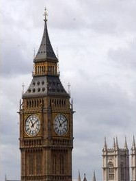

Whenever you think of London, you think of Big Ben, as it is one of England's most recognized landmarks.
Here are some Quick Facts about Big Ben:
Description: Big ben is not actually the clock tower. It is the largest of the five bells inside the clock tower.
Location: It is at the House of Parliament in Westminster, London.
Construction: Completed in 1856, it took 13 years to build. It is about 325 feet high and has 400 steps to reach the top.
Tourists: Bet you didn't know that foreign tourists are not allowed to climb the 400 steps to the top of the tower, but native Englanders can arrange a tour through a member of parliament or a lord. Please note that it is not wheelchair accessible.
Cost: free